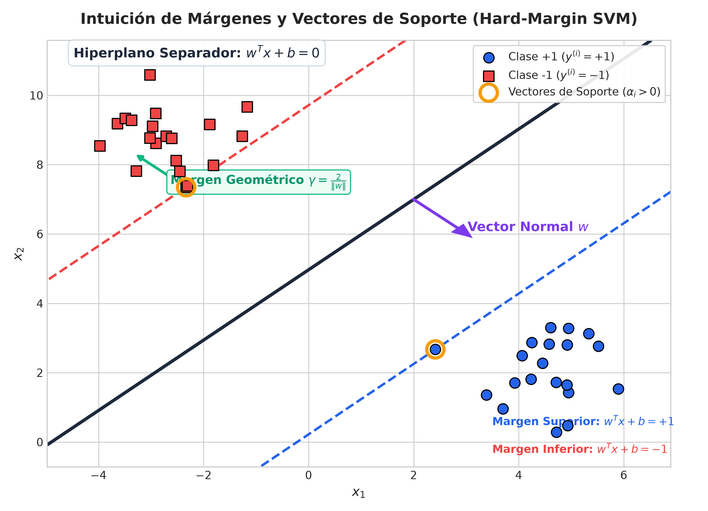
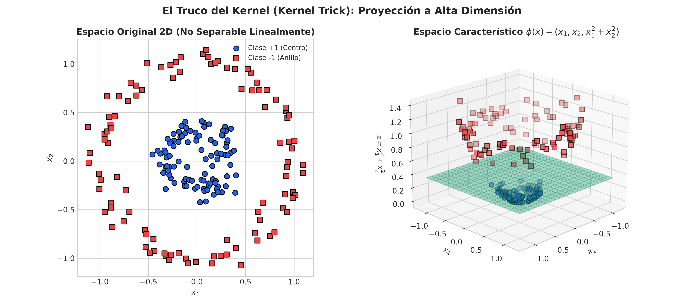
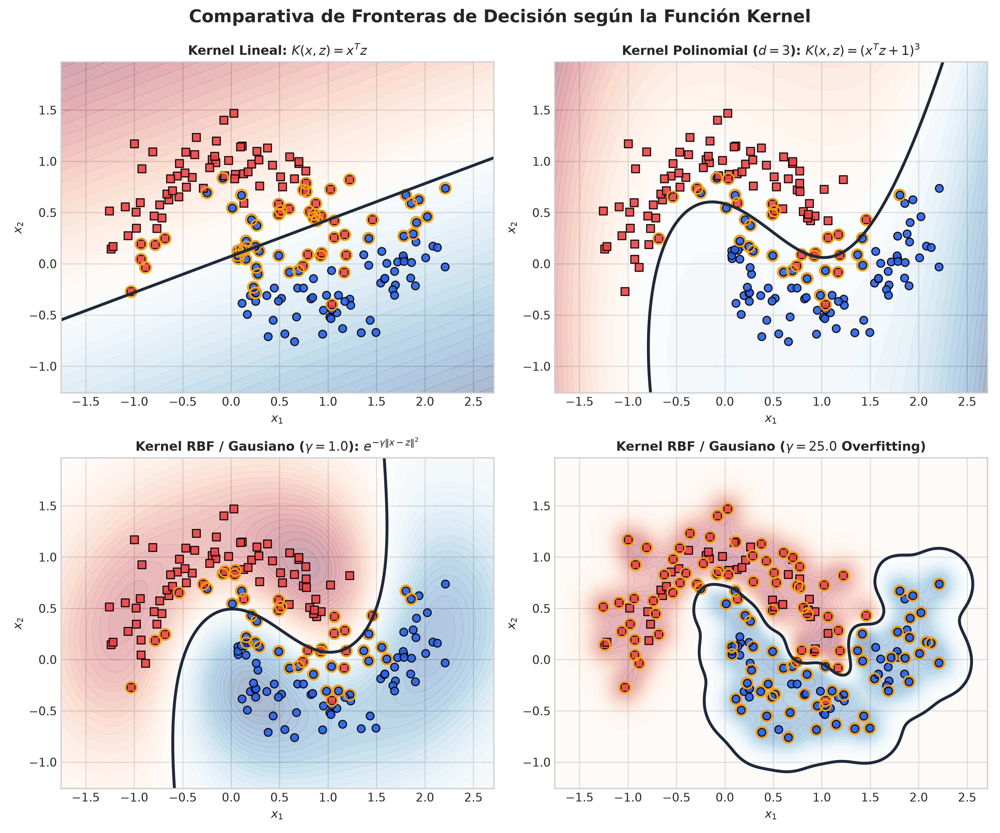
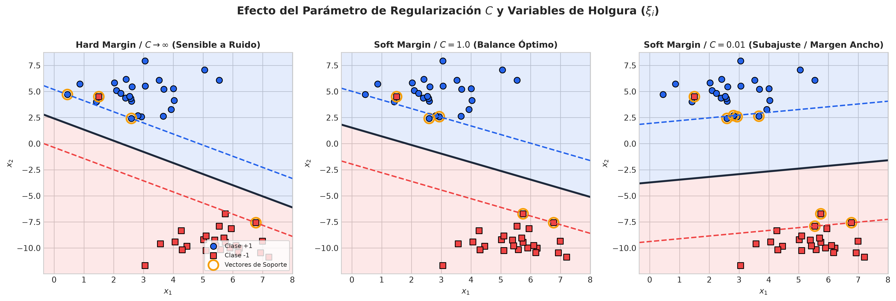
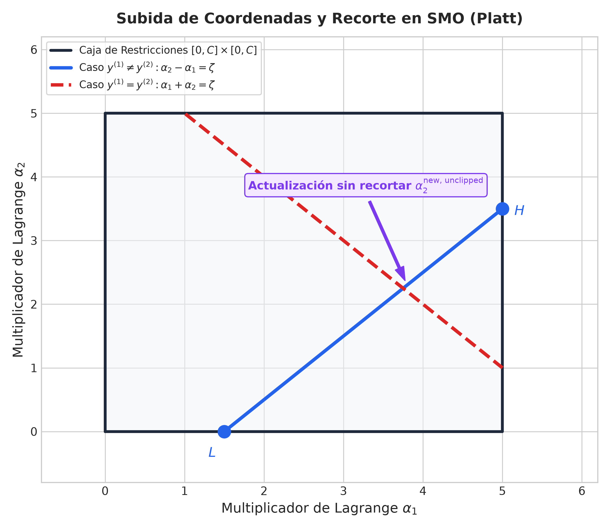

Basado en las notas de CS229 (Andrew Ng - Capítulo 6): Márgenes, Dualidad de Lagrange, Condiciones KKT, Truco del Kernel y Algoritmo SMO
Ingeniería Electrónica — Séptimo Semestre
A diferencia de Regresión Logística donde las etiquetas $y \in \{0, 1\}$, en SVM se define:
$$y^{(i)} \in \{-1, +1\}$$
Los parámetros del hiperplano separador se expresan explícitamente mediante el vector de pesos $w$ y el sesgo (bias) $b$:
$$h_{w,b}(x) = g(w^T x + b)$$
donde $g(z) = +1$ si $z \ge 0$, y $g(z) = -1$ si $z < 0$.
Si $y^{(i)} = +1$, queremos que $w^T x^{(i)} + b \gg 0$ (un número positivo grande).
Si $y^{(i)} = -1$, queremos que $w^T x^{(i)} + b \ll 0$ (un número negativo grande).
En general, buscamos que el producto:
$$y^{(i)}(w^T x^{(i)} + b) \gg 0$$
sea un número positivo grande para todas las muestras $i=1,\dots,m$.
El margen funcional de $(w, b)$ respecto al ejemplo $i$ es:
$$\hat{\gamma}^{(i)} = y^{(i)}(w^T x^{(i)} + b)$$
El margen funcional del conjunto de datos es $\hat{\gamma} = \min_i \hat{\gamma}^{(i)}$.
Limitación: Reescalar $(w, b) \to (2w, 2b)$ duplica $\hat{\gamma}$ sin cambiar la frontera de decisión.
Es la distancia euclidiana física desde el punto $x^{(i)}$ al hiperplano separador:
$$\gamma^{(i)} = y^{(i)} \left( \frac{w^T x^{(i)} + b}{\|w\|} \right) = \frac{\hat{\gamma}^{(i)}}{\|w\|}$$
El margen geométrico del conjunto es $\gamma = \min_i \gamma^{(i)}$. Es **invariante al reescalado** de $w$ y $b$.

Hiperplano Separador $w^T x + b = 0$, Hiperplanos Límite $w^T x + b = \pm 1$, Vector Normal $w$ y Vectores de Soporte ($\alpha_i > 0$)
Buscamos maximizar el margen geométrico $\gamma$ sujeto a que cada ejemplo tenga un margen mayor o igual a $\gamma$:
$$\max_{\gamma, w, b} \gamma \quad \text{s.t.} \quad y^{(i)}\left(\frac{w^T x^{(i)}+b}{\|w\|}\right) \ge \gamma, \quad i=1,\dots,m$$
Esta formulación es no convexa debido al término $\|w\|$ dividiendo.
Fijando el margen funcional $\hat{\gamma} = 1$, la distancia geométrica es $\gamma = \frac{1}{\|w\|}$. Maximizar $\frac{1}{\|w\|}$ equivale a minimizar $\frac{1}{2}\|w\|^2$:
$$\min_{w,b} \frac{1}{2} \|w\|^2 \quad \text{s.t.} \quad y^{(i)}(w^T x^{(i)} + b) \ge 1, \quad i=1,\dots,m$$
¡Este es un problema de **Programación Cuadrática (QP)** con solución única global!
Introduciendo multiplicadores de Lagrange $\alpha_i \ge 0$ para las restricciones de desigualdad $g_i(w,b) = 1 - y^{(i)}(w^T x^{(i)}+b) \le 0$:
$$\mathcal{L}(w, b, \alpha) = \frac{1}{2}\|w\|^2 - \sum_{i=1}^m \alpha_i \left[ y^{(i)}(w^T x^{(i)} + b) - 1 \right]$$
$$\alpha_i \left[ y^{(i)}(w^T x^{(i)} + b) - 1 \right] = 0$$
Consecuencia Fundamental: Si $y^{(i)}(w^T x^{(i)}+b) > 1$, se cumple estrictamente y se **requiere** que $\alpha_i = 0$.
Solo los puntos sobre el margen exacto tienen $\alpha_i > 0$. ¡Son los Vectores de Soporte!
Sustituyendo $w = \sum_{i=1}^m \alpha_i y^{(i)} x^{(i)}$ en $\mathcal{L}(w,b,\alpha)$ y simplificando con $\sum \alpha_i y^{(i)} = 0$, obtenemos la función dual $W(\alpha)$:
$$W(\alpha) = \sum_{i=1}^m \alpha_i - \frac{1}{2} \sum_{i=1}^m \sum_{j=1}^m y^{(i)} y^{(j)} \alpha_i \alpha_j \langle x^{(i)}, x^{(j)} \rangle$$
$$\max_{\alpha} W(\alpha) \quad \text{s.t.} \quad \alpha_i \ge 0, \quad i=1,\dots,m \quad \text{y} \quad \sum_{i=1}^m \alpha_i y^{(i)} = 0$$
Notice that the optimization problem depends **ONLY on the inner products** $\langle x^{(i)}, x^{(j)} \rangle$ between pairs of feature vectors!
Para clasificar una nueva muestra $x$, evaluamos:
$$f(x) = \operatorname{sign}(w^T x + b) = \operatorname{sign}\left( \sum_{i=1}^m \alpha_i y^{(i)} \langle x^{(i)}, x \rangle + b \right)$$
Dado que $\alpha_i = 0$ para todos los puntos fuera del margen, la suma se reduce **únicamente a los Vectores de Soporte** ($i \in SV$).
Usando cualquier vector de soporte $k$ con $\alpha_k > 0$ (donde $y^{(k)}(w^T x^{(k)} + b) = 1$):
$$b^* = y^{(k)} - \sum_{i \in SV} \alpha_i y^{(i)} \langle x^{(i)}, x^{(k)} \rangle$$
En la práctica se promedia sobre todos los vectores de soporte para mayor estabilidad numérica.
Si los datos no son separables linealmente en el espacio original $\mathbb{R}^d$, se aplica una transformación no lineal a un espacio de mayor dimensión $\mathcal{H}$:
$$x \mapsto \phi(x)$$
El producto interno en $\mathcal{H}$ pasa a ser $\langle \phi(x^{(i)}), \phi(x^{(j)}) \rangle$.
Una **Función Kernel** $K(x, z)$ calcula directamente el producto interno en el espacio transformado sin calcular explícitamente vector $\phi(x)$:
$$K(x, z) = \langle \phi(x), \phi(z) \rangle$$
¡Permite trabajar en espacios de **dimensión infinita** con costo computacional $O(d)$!

Mapeo No Lineal $\phi(x_1, x_2) = (x_1, x_2, x_1^2 + x_2^2)$: Círculos Concentricos en 2D se separan mediante un plano lineal en 3D
Una función $K: \mathbb{R}^d \times \mathbb{R}^d \to \mathbb{R}$ es un Kernel válido si y solo si para cualquier conjunto $\{x^{(1)}, \dots, x^{(m)}\}$, la **Matriz Gram** $K_{ij} = K(x^{(i)}, x^{(j)})$ es **simétrica y semi-definida positiva** ($K \succeq 0$):
$$z^T K z \ge 0, \quad \forall z \in \mathbb{R}^m$$

Fronteras en Dataset Moons: Lineal vs. Polinomial ($d=3$) vs. RBF ($\gamma=1.0$) vs. RBF Sobreajustado ($\gamma=25.0$)
Para admitir datos ruidosos o solapados, permitimos que algunos puntos violen el margen pagando una penalización lineal $\xi_i \ge 0$:
$$y^{(i)}(w^T x^{(i)} + b) \ge 1 - \xi_i, \quad \xi_i \ge 0$$
El problema primal reformulado es:
$$\min_{w,b,\xi} \frac{1}{2}\|w\|^2 + C \sum_{i=1}^m \xi_i$$
Al aplicar dualidad de Lagrange, el problema dual mantiene la misma función $W(\alpha)$ pero impone una **cota superior $C$** a los multiplicadores:
$$\max_{\alpha} W(\alpha) \quad \text{s.t.} \quad 0 \le \alpha_i \le C, \quad \sum_{i=1}^m \alpha_i y^{(i)} = 0$$
Parámetro $C$: Trade-off entre maximizar el margen (varianza) y minimizar errores (sesgo).

Efecto de $C$: $C \to \infty$ (Sensible a Outliers) vs. $C=1.0$ (Balance Robusto) vs. $C=0.01$ (Subajuste / Margen Tolerante)
El algoritmo Coordinate Ascent optimiza una variable $\alpha_i$ a la vez manteniendo las demás fijas.
Obstáculo en SVM: La restricción $\sum_{i=1}^m \alpha_i y^{(i)} = 0$ exige que no se pueda actualizar una sola $\alpha_i$ aislando las demás.
Solución de SMO: ¡Optimizar **dos multiplicadores** $(\alpha_1, \alpha_2)$ simultáneamente en cada iteración!

Restricción de Línea $\alpha_1 y^{(1)} + \alpha_2 y^{(2)} = \zeta$ dentro de la Caja $[0,C] \times [0,C]$ con Cotas $L$ y $H$
Si $y^{(1)} \neq y^{(2)}$ (la línea tiene pendiente +1):
$$L = \max(0, \alpha_2 - \alpha_1), \quad H = \min(C, C + \alpha_2 - \alpha_1)$$
Si $y^{(1)} = y^{(2)}$ (la línea tiene pendiente -1):
$$L = \max(0, \alpha_2 + \alpha_1 - C), \quad H = \min(C, \alpha_2 + \alpha_1)$$
$$\alpha_2^{\text{new}} = \operatorname{clip}\left(\alpha_2^{\text{new, unclipped}}, L, H\right)$$
Tras actualizar el par $(\alpha_1, \alpha_2)$, el sesgo $b_1^{\text{new}}$ derivado del primer vector se calcula como:
$$b_1^{\text{new}} = b^{\text{old}} - E_1 - y^{(1)}(\alpha_1^{\text{new}} - \alpha_1^{\text{old}})K_{11} - y^{(2)}(\alpha_2^{\text{new}} - \alpha_2^{\text{old}})K_{12}$$
donde $E_i = f(x^{(i)}) - y^{(i)}$ es el error de predicción actual.
Busca una función $f(x) = w^T x + b$ que tenga una desviación máxima de $\varepsilon$ respecto a las dianas $y_i$ ($\varepsilon$-insensitive loss tube):
$$\min_{w,b,\xi,\xi^*} \frac{1}{2}\|w\|^2 + C \sum_{i=1}^m (\xi_i + \xi_i^*)$$
Los errores menores a $\varepsilon$ **no pagan penalización alguna**.
¡CRÍTICO! SVM se basa estrictamente en distancias euclidianas y productos internos. Siempre escalar características con StandardScaler:
from sklearn.pipeline import make_pipeline
from sklearn.preprocessing import StandardScaler
from sklearn.svm import SVC
model = make_pipeline(StandardScaler(), SVC(C=1.0, kernel='rbf', gamma='scale'))Búsqueda conjunta del espacio logarítmico $(C, \gamma)$:
param_grid = {
'svc__C': [0.1, 1, 10, 100],
'svc__gamma': ['scale', 0.01, 0.1, 1.0],
'svc__kernel': ['rbf', 'poly']
}
grid = GridSearchCV(model, param_grid, cv=5)| Criterio / Algoritmo | Support Vector Machines (SVM) | Regresión Logística | K-Vecinos Más Cercanos (KNN) |
|---|---|---|---|
| Frontera de Decisión | Max-margin lineal o no lineal (vía Kernels) | Lineal (o polinomial si se expanden features) | No paramétrica / Local arbitraria |
| Complejidad Entrenamiento | $O(m^2 \cdot d)$ a $O(m^3)$ con Kernels (SMO es $O(m^2)$) | $O(m \cdot d)$ muy rápido | $O(1)$ (No hay entrenamiento explícito) |
| Sensibilidad a Outliers | Robusto en Soft-Margin ($C$ pequeño) | Sensible a valores atípicos severos | Sensible si $K$ es pequeño ($K=1$) |
| Esparsidad de la Solución | Alta (Solo requiere Vectores de Soporte) | Baja (Usa todos los datos) | Nula (Almacena todo el dataset) |
| Interpretabilidad | Baja con Kernels RBF; Media en Lineal | Alta (Coeficientes u Odds Ratios) | Baja / Explicaciones locales |
SVM busca el hiperplano que maximiza el margen geométrico $\frac{2}{\|w\|}$. La dualidad de Lagrange demuestra que solo los Vectores de Soporte ($\alpha_i > 0$) determinan la solución.
Permite operar implícitamente en espacios de características de dimensión infinita mediante funciones $K(x, z) = \langle \phi(x), \phi(z) \rangle$ sin pagar costo computacional exponencial.
El algoritmo SMO optimiza analíticamente pares de multiplicadores $(\alpha_i, \alpha_j)$. En la práctica, es esencial escalar con `StandardScaler` y ajustar $(C, \gamma)$ con `GridSearchCV`.